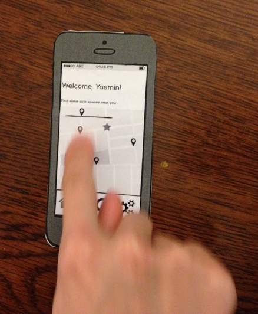
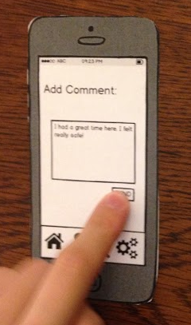
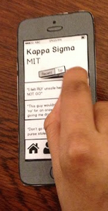
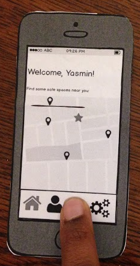
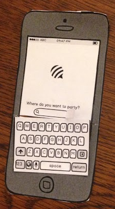
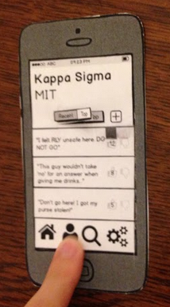
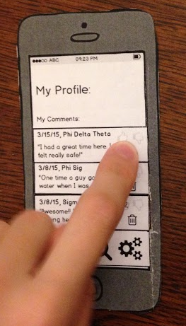

Created by Christina Pollais '16, Sasha Levy '15, and Steffi Lee '15
Testing Brief
The purpose of this application is to allow Wellesley Students to feel safer about deciding where to socialize at night and to prevent sexual assault. As such, the app is a hybrid app of Yelp and Yik Yak: it provides anonymous reviews for searchable social establishments around the location of the user. You must have a working Wellesley email address to gain access and participate in this application.
We would like to inform you that throughout the testing, we are not testing you and your abilities but rather the application and our design. If you feel uncomfortable or pressured at any point, please let us know and we can terminate the testing. Lastly, we would like you to think out loud and explain the thought process behind all your actions.
Scenario Tasks
Use this application to find the best-rated social establishments near you.
View the profile of a location.
Make a comment on a location.
Like/Unlike a comment.
Search for a location and view its profile page.
View your profile and delete one of you past comments.
Team-member Roles
- Christina: Acting as the computer: switching the screens
- Steffi: Briefing the user and taking photos and videos
- Sasha: Note taker/reflections
Observations
Pilot Users
User 1: class of 2017
Would look at the homepage, assumes that the tags pop up, would see what was near her. Sees the map, would click on each tag to get more information about a location. Would compare each location by clicking on each tag. Then she would compare sspace ratings. She would try to find more information about each location, what can you do at the location? It might be safe but not what she’s looking for. Would click on the name of the location.
Location tag: clicks on thumbs up. For un-liking would click again. For down-voting would click on the down-vote but for a mistake would click again. For switching from top to recent would click on recent.
Adds a comment: clicks on the plus sign. Types it in and pushes send. By the format: would put a short comment. Assumes that it would just bring her back to the location page. Comment: doesn’t show the date. Wants more information, expand the comment to show the date or other sub-comments, more conversation.
User 2: class of 2016
Finding locations in your area. Would click on search first rather than the locations on the map. Wants to search by rating or location rather than by name.
Clicks on the person icon: goes to profile page.
Goes back to home page. Guessing the star is herself. Doesn’t know where to find a list of places. Clicks on different location tags. Clicks on the name of the place.
Trying to find top rated establishment: clicks on recent to see the recent reviews rather than the top. Is there a way to compare different frats or can you only see this by looking at their profiles? Clicks on KS because they have the highest average score, how many likes were on the top comment, etc.
Making a comment: clicks on the plus sign. Types in the box and clicks send, which takes her back to the profile page of the location with her comment as the most recent one.
Goes to her profile and attempts to delete a comment: agrees that we could use a pop-up for confirmation.
If she doesn’t agree with a comment gives it a thumbs down. If she agrees with the comment gives it a thumbs up.
Searching for a location by name: clicks on the search symbol, clicks on the type box, types something in and clicks enter. Clicks on a result (by name).
Felt confusing at the beginning: first instinct is to go to through the different tabs because we only have 4 to get acclimated with the app.
User 3: class of 2015
Greeted with this screen, read the rating of social establishments in your area.’ Assuming that this is area she’s in right now. Clicks on the tags and gets the pop-up, wants to know more about that specific location, taken to the KS page. Reads most recent comments, to agree pushes thumbs up. To unlike, would click the thumbs up again. To view top comments, clicks on top.
To write a comment pushes on the plus button and types in the box and pushes send. Re-directed to the KS page with her comment as the most recent comment published.
Wants to see her profile: clicks on the person icon. Wants to delete a comment- pushes the trashcan.
Searching for a location: clicks on magnifying glass icon, clicks inside the text box and types in her location and pushes return- hesitates here, should have a specific button or pop-up for searching. Clicks on the result desired.
Real Users
User 4: class of 2017
Welcome screen. Knows to click on the location icons to get the name of the location. To view the profile of the specific location, clicks on her own user screen. Sees that it’s the user profile screen and goes back to the home page. Clicks on the search button. Clicks in the text box to get the keyboard to appear.
Trying to make a comment: pushes the plus icon, knows to push send to submit her comment. Understands the thumbs up/thumbs down metaphor.
When directed to view her profile, clicks on the user icon, which she now knows directs to her profile from the error made earlier in the test. When directed to delete a comment, pushes on the trash can icon. Does not mention error handling, but this is understandable as she is our first out of class user.
User 5: class of 2017
Opens the app. When directed to find the best rated establishment, clicks on the star. Error handling: give a ‘you are here’ message when clicked. Once she realizes that the star doesn’t give information about a location, clicks on the location tags on the map.
Knows to click on the name in the pop up from the location tag to get to that location’s profile. Add a comment: clicks on the plus sign, and clicks on send to submit. Rating a comment- clicks on the thumbs up for agree and thumbs down for disagree. If she made a mistake in the comment, would click the opposite button (ie thumbs down for thumbs up) rather than doing a second click on the same button.
If there was one thing that was confusing it was the star.
User 6: class of 2015
Directed to find the best rated social establishment around you. Assumes that the star means ‘you are here.’ Tries to find the one that’s the closest. Would try to click on the tag, assumes that they are ‘linked.’ Sees that the rating is 3.5/5. Clicks on the one that’s higher out of five. To view the profile, would click on the bold label in the location pop up.
To view top comments, would click on top. To make a comment- would click on the plus sign ‘automatically’. Types in a comment and pushes send. Re-directed to the location page. To like or unlike comment the user understands the thumbs up thumbs down metaphor. To undo the like or unlike, would click on that vote again.
Knows to click on the user icon to go to her profile. To delete a past comment, clicks on the trashcan.
To search- click son the search icon. Clicks in the search bar and types in. on the results page- knows to click on the bold text once again to bring her to the location’s page.
User 7: class of 2018
Find the best rated social establishments in your area- immediately goes to the search, and decides to search based on where she knows people are going. Types in “Harvard frat/Harvard final club” verses the exact name of a location. Would add a location if it’s not there, but would assume that no one is going there if no one has said anything about it. With more direct instructions to find the place nearest to her, clicks on the user icon and sees her profile page. Realizes the error, but suggests that the profile show the map.
We direct her to click on the home page after she gets confused trying to find the map. Once she finds the map, is able to navigate through by clicking on location tags and the pop-up to go to the location’s page.
When directed to add a comment, knows to push on the plus button. Adding her comment goes well. Liking and unliking the comments are understood with the thumbs up thumbs down. To undo a like or unlike, would click on the same button again.
To delete one of her own past comments, knows to push on the profile page, which she found in earlier exploration of the app. Knows to push the garbage can to delete a comment.
User comment- even though she had difficulty finding the map, thinks that it was more an issue of phrasing of the task then design of the application.
User 8: class of 2018
Find the best rated social establishment near you. Clicks on the location tag. Clicks on the center of the tag- not the bolded title – to find out more information about that location. To return to the map- clicks on the title “click out.”
To make a comment – clicks on the plus sign. Types in a comment in the text box and pushes send, but only after being prompted to press send. To like or unlike, knows to press thumbs up or thumbs down. If she wanted to redo her like or unlike would ‘unclick’ by clicking the icon for a second time, and then click on the opposite icon.
To view her profile, clicks on the user icon. On her profile page, clicks on the comment first and then the garbage icon.
Interview- at any point were you confused? During it she was confused about comments, but thinks that overall it was clear.
Prototype iteration
Before we did our user observations for users outside of class, we discussed the comments given to us during class. We decided to rephrase some of our tasks to make them easier to understand as some users had trouble completing them. For example, for task #1, we rephrased from “Find the top-rated social establishment in your area” to “Find the top-rated social establishment near you”. Another problem that most pilot users mentioned was that we had a lack of informative feedback. To solve this, we decided to add pop-ups after decisive actions were being taken. For example, when a user clicks “submit” after writing a comment, a pop up would appear that would inform them that their action has been processed. In addition, a confirmation pop-up would appear when a user clicks on the delete button so as to confirm that the user truly wants to delete their comment. Both of these provide informative feedback and the second limits users making mistakes.
Resolutions
We learned that we may need to include a back button on each page for easier reversal of action. This seemed especially necessary in the exploratory stages of app usage, when the user was clicking random buttons to become more familiar with the app. For example, in task 1, one user wanted to see the profile pages of each location before deciding which location was the one she wanted to go to. She attempted to go back to the map page by clicking on the name of the location that she was currently viewing. The back button is going to be very challenging because a user could access a location page from many different sources, such as the search results or the map. There was also confusion about the home button icon also being the map page. We think we need either a separate home page that solely serves as a home page and a separate page for the map or change the homepage icon to be a map icon.
Photos of Tasks
Task 1: Use this application to find the best-rated social establishments near you.
Description: The user is clicking on the locations on the map to see their description/rating

Task 2: View the profile of a location.
Description: The user clicking on the location to go to its page.
Task 3: Make a comment on a location.
Descripton: The user is submitting a comment.

Task 4: Like/Unlike a comment.
Description: The user is liking a comment by pressing on the thumbs up (hard to see).

Task 5: Search for a location and view its profile page.
Description: The user is clicking on the the "search" on the bottom of the page and then typing in what they want to search.


Task 6: View your profile and delete one of you past comments.
Description: The user is clicking on the "profile" on the bottom of the page and then pressing the trashcan to delete a comment.


Video of a user
This video is of a user completing task 5: search for a location and view its profile page.